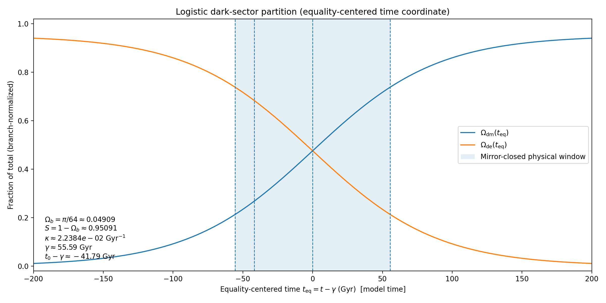

Quantum-Geometric Cyclic Cosmology
A Time-Symmetric Model of Expansion and Renewal
1. Introduction
We develop a quantum–geometric cosmology in which two time–reversed branches form a globally zero–energy configuration. On the observed branch, the onset of classical history is identified with an emergence/partition event at \(t=0\). The emergence event marks the point at which a branch-normalized sector decomposition becomes physically meaningful. Although the logistic composition law introduced below admits analytic continuation as a function of \(t\), we take its physical domain on any single classical branch to be a finite interval
beginning at emergence and closing at a non-arbitrary endpoint \(t=L\) fixed by the midpoint symmetry about dark–sector equality (Sec. Framework Overview). Times outside this interval are treated as bookkeeping continuation (e.g. into a conjugate branch) rather than as an extension of a single classical history.
In the remainder we adopt the mirror-closed convention,
as the canonical branch-epoch length. An alternative operational definition based on dark-energy exhaustion, \(L_{\varepsilon}\), is introduced in Sec. Finite Epoch Exhaustion; for \(\varepsilon\ll 1\) this yields a longer epoch and serves as a phenomenological extension rather than a replacement of the mirror-closed construction.
At emergence, an asymmetric geometric seed,
fixes boundary data for the initial partition of the cosmic energy budget within a cube–circle construct.
Rescaled seed (two-quadrant deficit).
Because \(\alpha\) is the normalized circle–square deficit at the quadrant level, it reappears in rescaled form whenever the construction aggregates multiple identical quadrant gaps. In particular,
so occurrences of \(2-\pi/2\) should be read as a two-quadrant (half-scale) appearance of the same intrinsic seed, not as an additional independent input.
Geometric emergence fractions.
The cube–circle construction supplies the emergence partition
which sums to unity exactly. We interpret \(\Omega_{\rm de}\) as vacuum-like coherence and \(\Omega_{\rm dm}\) as localized gravitating structure emerging through decoherence. The baryonic weight \(\Omega_b\) is taken as fixed by the geometric partition once the branch becomes classical.
A central point of the construction is the separation between (i) a finite conversion capacity supplied by geometry (the fixed dark-sector budget \(1-\Omega_b\)) and (ii) a time profile for redistribution supplied by a bounded law of motion. The seed asymmetry \(\alpha\) supplies boundary data at \(t=0\); it does not, by itself, prescribe the steepness or duration of conversion. The temporal unfolding is encoded instead by a normalized logistic composition variable whose midpoint is fixed by definition to coincide with dark–sector equality.
Dark–sector logistic and equality midpoint.
Let
denote the total dark–sector weight. In the minimal closed–epoch realization adopted here, \(S\) is taken constant over the decoherence/conversion epoch. Define the dark–matter share of the dark sector by
We postulate a logistic evolution on the physical branch-epoch \(t\in[0,L]\),
where \(\kappa\) sets the steepness and \(\gamma\) is the midpoint time. By construction,
so the inflection point of the S–curve is the epoch of dark–sector equality and the moment of maximal conversion rate.
Equality-centered plotting coordinate.
For visual symmetry it is convenient to introduce an equality-centered time coordinate
so that the logistic composition law can be written as
with dark-sector equality at \(t_{\rm eq}=0\). The mirror-closed branch-epoch \(t\in[0,L_{\rm m}]\) with \(L_{\rm m}\equiv 2\gamma\) corresponds to the symmetric interval
where \(t_{\rm eq}=-\gamma\) is the emergence boundary (\(t=0\)) and \(t_{\rm eq}=+\gamma\) is its mirror endpoint (\(t=2\gamma\)). We retain \(t\) (with \(t=0\) at emergence) as the default time coordinate in the main text, and use \(t_{\rm eq}\) primarily for symmetric plots and schematics.
Mirror-closed epoch (finite completion without a terminus).
A logistic approaches \(f\to 1\) only asymptotically, so we do not define completion by an exhaustion threshold. Instead we use the exact complement symmetry of the logistic about \(\gamma\):
We define the end of a branch-epoch as the mirror of the emergence time \(t=0\) about the equality midpoint,
so that
Thus a single decoherence/conversion epoch is the interval \(t\in[0,L]\), closing at a non-arbitrary mirror state fixed by the equality midpoint. Accordingly, in figures and parameter anchoring we display and interpret the logistic history only on \(t\in[0,L]\); values outside this window represent formal continuation (or the conjugate branch under the complement rule) rather than an extension of the same classical branch.
Two-branch cyclicity.
Cyclicity is realized by a two-branch complement relation rather than by forcing \(f\) to reach \(0\) or \(1\) in finite time. Let \(f_+(t)\) denote the logistic share on the observed branch. Define the conjugate branch by
Equivalently, one may encode the alternation on a single bookkeeping time parameter as
The full cyclic period (return to the same partition) is therefore
Present–day anchoring.
Given an initial partition \((\Omega_{\rm dm}(0),\Omega_{\rm de}(0))\) at \(t=0\) and a present anchor \((\Omega_{\rm dm}(t_0),\Omega_{\rm de}(t_0))\) at \(t=t_0\), the logistic parameters are determined by the corresponding shares \(f(0)=\Omega_{\rm dm}(0)/S\) and \(f(t_0)=\Omega_{\rm dm}(t_0)/S\):
For the numerical values used in this work,
so that
This fixes where the present epoch lies on the S–curve and fixes the epoch closure time \(L\) by symmetry about the equality midpoint.
Baryonic emergence and bidirectional Viète structure.
The baryonic weight is fixed at emergence by \(\Omega_b=\pi/64\). To encode a percent-level residual associated with bidirectional circle–square closure, we introduce the dimensionless Viète-inspired factor
which parametrizes a small geometric imbalance between dual curvature projections. In this way, \(\alpha\) fixes the existence of an intrinsic seed asymmetry at \(t=0\), while \(\beta_{\mathrm V}\) provides a structural measure of finite residuals available to bias baryonic selection in the emergence partition. The logistic conversion profile remains a separate dynamical postulate governing dark-sector redistribution after emergence.
Notation and normalizations.
We set \(c=1\). The present cosmic age is \(t_0=13.8~\mathrm{Gyr}\). All sector quantities \(\Omega_i\) are branch-normalized weights satisfying Eq. (\ref{eq:branch_norm}) for \(t\ge 0\). We use \(\Omega_i\) as dimensionless sector weights; in the late-time FRW embedding (Sec. Einstein Conservation onward) they coincide with the usual critical-density fractions, but are not assumed to obey independent \(\Lambda\)CDM conservation laws because the dark components exchange energy.
Equality-centered time coordinate.
For visual symmetry it is convenient to introduce an equality-centered time
so that the logistic becomes \(f(\tau)=\bigl(1+e^{-\kappa\tau}\bigr)^{-1}\) with equality at \(\tau=0\). The mirror-closed epoch \(t\in[0,2\gamma]\) corresponds to \(\tau\in[-\gamma,+\gamma]\).
Imperfect symmetry and the origin of decoherence.
A guiding premise of this work is that perfectly realized symmetry is a singular idealization: in any finite–resolution physical system, exact symmetry does not generically select a preferred direction in state space, and therefore does not by itself supply an intrinsic notion of temporal ordering. Dynamical behavior requires not an externally imposed symmetry breaking, but the unavoidable presence of an intrinsic asymmetry arising from finite geometric realization.
In the present model this irreducible deviation is encoded at the emergence event \(t=0\) through the asymmetric seed \(\alpha\), which fixes boundary conditions for the initial partition of the cosmic energy budget. Crucially, \(\alpha\) does not by itself prescribe the conversion duration; it supplies nonzero boundary data from which subsequent redistribution within the dark sector proceeds.
The distinction between the existence of an asymmetry (boundary data) and its propagation (a law of motion) is essential. Accordingly, after emergence the conversion dynamics are encoded by the bounded logistic evolution of the dark–sector share \(f(t)\), whose midpoint is defined at dark–sector equality and whose epoch completion is defined by mirror closure at \(t=L=2\gamma\). Cyclicity is implemented by the two-branch complement rule. This separation of roles ensures that late–time behavior is insensitive to microscopic details of emergence while remaining predictive once the boundary data and present-day anchor are specified.
2. Framework Overview
We now formalize the geometric structure of the model using a cube–circle framework that encodes the balance between localization and coherence. The organizational principle is a strict separation between boundary data fixed at the emergence/partition event \(t=0\) and a bounded law of motion governing subsequent redistribution within the dark sector.
Cube–circle partition and sector identification.
The construction begins with a unit cube enclosing two opposed conic volumes defined by quarter–circular arcs. The resulting volumetric ratios,
define three branch-normalized sector weights at emergence, interpreted as baryonic matter (\(\Omega_b\)), dark matter (\(\Omega_{\rm dm}\)), and dark energy (\(\Omega_{\rm de}\)). These ratios are used throughout as a compact geometric encoding of complementary structure rather than as a literal spatial tessellation. In particular, the contrast between the circle (curvature/phase, \(\pi\)) and the square/cube (orthogonality/metric structure, \(\sqrt{2}\)) is used as a geometric analogue of the opposition between delocalized coherence and localized, particle-like curvature modes.
Emergence at \(t=0\) and the asymmetric seed.
The Big Bang is identified here with the emergence/partition event at \(t=0\), where the branch-normalized sector weights in the equation above become classically meaningful. The existence of a decoherence channel is traced to an intrinsic geometric mismatch between ideal rotational closure and finite orthogonal constructions, quantified by the circle–square deficit
This quantity is structural: it supplies the irreducible asymmetry required for a directed classical history to emerge, but it does not by itself prescribe the temporal profile of the subsequent conversion.
Dark–sector redistribution as a bounded logistic.
After emergence, the model focuses on redistribution within the dark sector while keeping the baryonic sector fixed by geometry. Define the dark sector total and the dark-matter share
so that \(\Omega_{\rm dm}(t)=S\,f(t)\) and \(\Omega_{\rm de}(t)=S[1-f(t)]\). In the minimal closed-epoch realization, \(S\) is taken constant over a decoherence/conversion epoch. The temporal unfolding is encoded by the logistic law
where \(\kappa\) sets the steepness and \(\gamma\) is the midpoint time. The midpoint is fixed by dark–sector equality:
Thus the inflection point of the S–curve is identified with the physically distinguished epoch at which the dark sector is exactly balanced and the conversion rate is maximal.
The conversion epoch as a finite interval on the S–curve.
Although a logistic approaches \(f\to 0\) or \(f\to 1\) only asymptotically, the framework admits a non-arbitrary finite epoch definition using the exact complement symmetry about the midpoint. We define the endpoint of a single branch-epoch as the mirror of \(t=0\) about \(t=\gamma\):
This choice implies \(f(L)=1-f(0)\) and therefore exchanges the emergence weights of the two dark components across the epoch: \(\Omega_{\rm dm}(L)=\Omega_{\rm de}(0)\) and \(\Omega_{\rm de}(L)=\Omega_{\rm dm}(0)\). In this model the Big Bang epoch refers to the decoherence/conversion interval \(t\in[0,L]=[0,2\gamma]\).

2.1. Radiation Era and Branch Normalization
The emergence/partition event at \(t=0\) is treated as the onset of a classical branch description in which sector weights can be assigned. Times \(t<0\) are interpreted as a pre-classical regime in which the order parameter exists but the sector decomposition is not yet operational. In this sense, the earliest radiation-dominated phase of standard cosmology is not modelled here as a time-dependent sequence of \(\Omega_i(t)\); instead, radiation is understood as a pre-partition (or rapidly transient post-partition) component that dilutes prior to the branch-normalized accounting adopted in the remainder of the work.
Accordingly, throughout this paper we use branch normalization
and treat the cube–circle ratios as boundary data at emergence, rather than as the \(a\to 0\) limit of FRW density fractions.
2.2. Geometric Instability, Decoherence, and the Seeded Boundary Condition
The circle–square deficit \(\alpha=1-\pi/4\) encodes a mismatch between ideal rotational coherence and finite orthogonal realizability. In the hypothetical limit \(\alpha\to 0\) (exact geometric closure), a perfectly symmetric coherent state would not generically select a preferred direction in state space. A nonzero \(\alpha\) renders perfect coherence only metastable, permitting a directed classical history to emerge once the sector partition becomes meaningful at \(t=0\).
In this formulation, the seed \(\alpha\) fixes only boundary data (the existence of an intrinsic asymmetry at emergence); it is not inserted as an explicit forcing term in the evolution law. The propagation of decoherence is encoded instead by the bounded logistic evolution of the dark share \(f(t)\). The midpoint of the S–curve is fixed by construction to coincide with dark-sector equality, while epoch completion is defined by mirror closure at \(t=L=2\gamma\). This separation of roles isolates (i) the geometric origin of asymmetry from (ii) the coarse-grained time profile by which it unfolds.
2.3. Baryonic Emergence from Bidirectional Viète Structure
In the cube–circle construction, the baryonic sector weight is fixed at emergence by \(\Omega_b=\pi/64\). To encode the presence of finite residuals in bidirectional circle–square closure, we introduce a Viète-inspired structural factor
and the associated percent-level residual
This \(\varepsilon_{\mathrm V}\) is interpreted as a geometric measure of finite-depth mismatch between dual curvature projections. In the present paper it serves as a compact structural parameter available to bias baryonic selection (or baryogenesis) within the emergence partition, while the subsequent dark-sector redistribution is governed independently by the logistic history \(f(t)\).
3. Dynamic Evolution Law
The cosmological evolution on a given branch is modelled as a bounded redistribution process within the dark sector: vacuum-like coherence (\(\Omega_{\rm de}\)) progressively converts into localized gravitating structure (\(\Omega_{\rm dm}\)), while \(\Omega_b\) remains fixed by the geometric emergence partition. The conversion coordinate is the dark-sector share \(f(t)=\Omega_{\rm dm}(t)/S\), whose midpoint is by definition the epoch of dark-sector equality.
3.1. Logistic Law with Equality Midpoint
With \(S=\Omega_{\rm dm}(t)+\Omega_{\rm de}(t)\) constant over an epoch and \(f(t)\equiv \Omega_{\rm dm}(t)/S\), we impose
so that
The logistic has an exact complement symmetry about \(\gamma\),
which will be used to define finite epochs and cyclic completion without requiring asymptotic exhaustion.
3.2. Conversion Rate and Dark–Sector Flux
Differentiating the logistic yields
so that (with \(S\) constant)
and hence
Windowed dynamics and epoch closure.
Because the exchange kernel is \(f(1-f)\), the conversion rate is symmetric about the equality midpoint and returns to the same value at mirror times:
This makes \(t\in[0,2\gamma]\) a natural closed conversion window: the epoch begins at emergence and closes at its mirror state without invoking asymptotic tails of the logistic outside the physical branch interval. The conversion rate is uniquely maximized at equality \(f=\tfrac12\), where
Anchoring by boundary data and one present-day point.
The steepness \(\kappa\) and midpoint \(\gamma\) are fixed by requiring that the logistic passes through (i) the emergence share \(f(0)\) implied by the cube–circle partition and (ii) a present-day anchor \(f(t_0)\) at \(t=t_0\):
This uniquely determines where the present epoch lies on the S–curve.
3.3. Mirror-Closed Epoch and Big Bang Duration on the S–Curve
A logistic does not reach \(f=0\) or \(f=1\) in finite time, but it does admit a natural finite epoch definition via symmetry. We define the end of a single branch-epoch as the mirror of \(t=0\) about the midpoint \(t=\gamma\):
Then
In this framework, the Big Bang epoch is the finite conversion interval \(t\in[0,L]\), i.e. the portion of the S–curve between emergence and its mirror state about dark-sector equality.
3.4. Time–Reversal Pairing and Two–Branch Completion
Let \(f_+(t)\) denote the logistic composition history on the observed branch for \(t\in[0,L_{\rm m}]\), with \(L_{\rm m}\equiv 2\gamma\). Define the conjugate (time–reversed) branch to traverse the same S–curve in the opposite direction:
Using the logistic complement symmetry about \(\gamma=L_{\rm m}/2\), this is equivalently
Differentiating gives the conversion-direction reversal in each branch's forward time:
where the second equality uses \(\dot f(L_{\rm m}-t)=\dot f(t)\). Thus the two branches share the same conversion magnitude but carry opposite conversion direction.
3.5. Quantum–Geometric Interpretation
At \(t=0\) the sector partition becomes classical and is fixed by the cube–circle boundary data, seeded by the intrinsic asymmetry \(\alpha=1-\pi/4\). Subsequent history on a given branch is governed by the bounded logistic conversion \(f(t)\), interpreted as progressive decoherence of vacuum-like coherence into localized gravitating structure within the fixed dark-sector budget \(S=1-\Omega_b\). The equality midpoint \(t=\gamma\) is distinguished by maximal conversion rate and exact dark-sector balance, and the conversion epoch is identified with the finite S-curve interval \(t\in[0,2\gamma]\) terminating at the mirror state of emergence. In a two-branch completion, the conjugate branch carries the complementary conversion direction, enabling cyclic closure through the relation \(f_-(t)=1-f_+(t)\) while preserving a globally time-symmetric, zero-energy picture.
4. Cyclic Symmetry
The cyclic (time–symmetric) completion of the baseline model can be presented in two equivalent endpoint conventions: (i) a mirror-closed branch-epoch with endpoint \(L=2\gamma\) fixed by complement symmetry about the equality midpoint, and (ii) an operational endpoint \(L_{\varepsilon}\) defined by a dark–energy exhaustion threshold \(f(L_{\varepsilon})=1-\varepsilon\) (Sec. Finite Epoch Exhaustion). The mirror-closed realization used in the geometric construction is the special case \(\varepsilon=f(0)\), for which \(L_{\varepsilon}=2\gamma=L\) and the dark components exchange their emergence weights across the epoch.
Branch pairing and the equality midpoint.
Let \(M_+\) denote the observed expansion branch, emerging at \(t=0\) and evolving monotonically according to the logistic history. The equality midpoint is the (unique) time at which the dark components coincide:
The end of the finite epoch on \(M_+\) is defined by the exhaustion threshold \(\Omega_{\rm de}(L)=\varepsilon S\) (equivalently \(f(L)=1-\varepsilon\)).
The conjugate partner branch \(M_-\) is introduced by reflecting the coordinate time about the equality midpoint,
together with the complement symmetry of the logistic coordinate,
Equation \(f(2\gamma-t)=1-f(t)\) exchanges the roles of dark matter and dark energy at conjugate times. Differentiating gives the kernel symmetry
so the magnitude of the conversion rate is symmetric about equality. The direction of conversion nevertheless reverses when one differentiates with respect to each branch’s own forward time parameter. In this way, the paired branches carry opposite conversion directions while retaining equal conversion magnitudes under the global pairing.
Finite epoch and cycle completion.
On a single branch the logistic dynamics require no sign flip of \(\kappa\). Instead, the conversion epoch is taken to be finite by definition: it terminates once dark energy falls below the exhaustion threshold, \(\Omega_{\rm de}(L_{\varepsilon})=\varepsilon S\) (equivalently \(f(L_{\varepsilon})=1-\varepsilon\)). The corresponding duration \(L\) is finite. In this sense, “cyclic” refers to the existence of a bounded conversion interval within each branch, together with the time–reversal pairing needed for the global zero–energy completion.
Equality is built in.
Because the logistic coordinate is the dark–sector share \(f(t)\), the model identifies the logistic inflection point with the equality epoch: both occur at \(t=\gamma\). Thus there is no separation between “maximum conversion rate” and “dark equality” within the present parameterization; equality is encoded directly as the midpoint condition.
4.1. Entanglement Interpretation of the Renewal Phase
Within the time–symmetric completion, one may interpret the renewal branch as the quantum–conjugate mirror of the observed cosmological domain. A convenient schematic representation is a balanced superposition of two time–reversed sectors,
where \(|\Psi_{+}\rangle\) corresponds to \(M_+\) and \(|\Psi_{-}\rangle\) to its conjugate partner \(M_-\). In a globally zero–energy construction, one envisions that suitable expectation values can cancel between the conjugate sectors so that the composite two–branch state is energy neutral, even though each branch supports a locally time–directed semiclassical history.
In this interpretive picture the mirror sector need not be viewed as a separate classical universe; it can instead be treated as a conjugate component of a single quantum–geometric state. Residual entanglement between sectors then acts effectively as curvature within each branch. As decoherence proceeds away from the emergence boundary at \(t=0\), cross–branch interference is suppressed and the effective dynamics within each branch become increasingly local and semiclassical. Near the equality midpoint \(t=\gamma\), the global pairing symmetry extremizes cross–branch correlations; in speculative renewal scenarios, this locus may be a natural site to discuss re–coherence mechanisms that could seed a subsequent epoch.
This interpretation is not required for the baseline logistic dynamics, but it provides a quantum–informational narrative linking the zero–energy completion, the time–reversed pairing, and the emergence of branch–local gravitational phenomenology from residual cross–correlations. The factor \(1/\sqrt{2}\) simply encodes the balanced weighting of a symmetric two–branch superposition in this schematic representation.
5. Physical Interpretation
The framework admits a compact physical reading in which (i) global energy neutrality is implemented through a two–branch completion, (ii) the dark sector is modeled as a bounded decoherence/re–coherence channel, and (iii) the salient times are fixed by definition (equality midpoint) and by threshold (exhaustion endpoint), rather than by an arbitrarily imposed time window.
- Zero–Energy Completion. The construction assumes that the universe admits a globally balanced (net–zero) energy accounting when matter–energy is combined with gravitational contributions. This motivates a time–reversed pairing in which two conjugate branches may contribute equal and opposite energetic components when considered as a composite configuration. Each branch remains locally time–directed, while the two–branch completion is formally time symmetric.
- Residual Cross–Branch Correlations. In the time–symmetric extension, gravity may be interpreted as a weak residual correlation between conjugate branches \(M_+\) and \(M_-\). In the schematic superposition, cross–branch entanglement can be viewed as producing an effective curvature response within each branch without modifying the baseline logistic conversion law.
- Dark Components and the Equality Midpoint. Dark matter and dark energy are treated as complementary manifestations of vacuum (de)coherence: dark matter as localized, gravitating curvature modes and dark energy as a delocalized coherence reservoir. Their relative magnitudes are tracked by the dark–sector share \(f(t)=\Omega_{\rm dm}/(\Omega_{\rm dm}+\Omega_{\rm de})\) (equivalently \(f=\Omega_{\rm dm}/S\) when \(S\) is constant within an epoch). A defining feature of the parameterization is that the logistic midpoint is fixed by construction to coincide with dark–sector equality: \[ f(\gamma)=\tfrac12 \quad\Longleftrightarrow\quad \Omega_{\rm dm}(\gamma)=\Omega_{\rm de}(\gamma)=\frac{S}{2}. \] Thus the theory singles out a preferred crossing time as an intrinsic geometric feature of the coordinate choice, rather than as an incidental output of a fit.
- Exhaustion Endpoint and Finite Epoch Structure. On a single branch the epoch is finite by definition: it terminates when dark energy falls below a small exhaustion fraction \(\varepsilon\ll 1\), \(\Omega_{\rm de}(L)=\varepsilon S\) (equivalently \(f(L)=1-\varepsilon\)). This defines an operational end time \(L\) and hence a cycle–completion criterion within the branch. Strong renewal (re–coherence and re–seeding) is an additional dynamical hypothesis, but the baseline model already provides the canonical markers: emergence at \(t=0\), equality at \(t=\gamma\), and completion at \(t=L\).
- Thermodynamic Arrow. Entropy increases monotonically along each individual branch, reflecting the irreversibility of decoherence in forward physical time. In a formally time–symmetric completion, the conjugate branch provides the time–reversed counterpart, so that the composite description admits a global bookkeeping symmetry under time reversal. Whether this symmetry corresponds to a realized physical re–coherence cycle or merely to a completion principle depends on physics beyond the baseline logistic evolution.
Together, these elements define a quantum–geometric cosmology in which the emergence event at \(t=0\) is seeded by the intrinsic asymmetry \(\alpha=1-\pi/4\), the subsequent dark–sector redistribution is governed by a bounded logistic whose midpoint is dark–sector equality, and finite epoch completion is defined by dark–energy exhaustion. Baryonic emergence is anchored independently by the bidirectional Viète recursion factor \(\beta=9\sqrt{2}/(4\pi)\), linking geometry, energy, and information within a single manifold.
6. Observational Outlook
The framework suggests observational handles that could, in principle, distinguish it from conventional \(\Lambda\)CDM phenomenology if residual coherence, cross–branch correlations, or renewal dynamics are realized in nature. Independent of any particular dataset fit, the model adds a qualitative structural statement not present in standard parameterizations: it places the present universe within a finite conversion window bounded by emergence at \(t=0\) and exhaustion at \(t=L\), with a physically defined midpoint \(t=\gamma\) set by dark–sector equality.
Possible phenomenological consequences include:
- Mass–to–Light Systematics. If decoherence is incomplete or spatially nonuniform, regions of partial vacuum coherence could persist. This may appear as correlated deviations in inferred mass–to–light ratios and/or environmental trends in dark–matter inferences relative to standard expectations.
- Gravitational–Wave Background Structure. If coherent restructuring of curvature is enhanced near the equality epoch \(t=\gamma\) or during a putative renewal phase, the resulting dynamics could source distinctive low–frequency gravitational–wave backgrounds. In this picture, such signals would trace large–scale geometric realignment rather than purely stochastic astrophysical superposition.
- Neutrino Phase Sensitivity. If residual inter–branch correlations persist in any effective description, they could manifest as small phase shifts or oscillation anomalies in high–energy neutrino populations, providing an indirect probe of coherence beyond the minimal particle–physics framework.
- Redshift Evolution of the Dark–Sector Ratio. Because the midpoint is fixed by equality and the endpoint by exhaustion, the model predicts a specific evolution of \(\Omega_{\rm dm}/\Omega_{\rm de}\) once the mapping between cosmic time \(t\) and the scale factor \(a(t)\) is specified. Constraints on the redshift dependence of effective dark–energy behavior therefore provide a direct test of the logistic conversion hypothesis.
Collectively, these avenues share a common premise: if late–time observables retain any memory of an underlying quantum–geometric origin, then precision measurements of gravitational–wave spectra, galactic dynamics, neutrino oscillation phases, and redshift–dependent dark–sector behavior may expose deviations from purely classical parameterizations.
7. Quantum–Correlative Interpretation
In the time–symmetric extension, one may view the late–time universe as comprising two semiclassical branches related by time reversal, with decoherence suppressing direct interference but not necessarily eliminating all cross–correlations. In this reading, phenomena attributed to dark matter and dark energy arise as effective semiclassical manifestations of residual correlations between two conjugate branches in a globally zero–energy completion. No additional exotic particles or ad hoc vacuum fields are assumed beyond the geometric vacuum response already encoded in the branch–normalized dark sector.
Within this interpretation, dark–sector phenomenology corresponds to the primary stage of cosmological decoherence: delocalized vacuum coherence is progressively converted into localized, gravitating curvature modes. In the dynamical model developed above, this conversion is tracked by the dark–sector share
whose logistic midpoint is fixed by equality and whose endpoint is fixed by exhaustion. The emergence event at \(t=0\) is then the moment at which the seeded asymmetry \(\alpha=1-\pi/4\) renders perfect coherence metastable and selects the initial partition of sectors.
Baryonic emergence and secondary localization.
Baryonic matter may be interpreted as a secondary localization channel within an already decohering dark sector, preferentially realized inside gravitational wells. In the geometric formulation, baryonic emergence is anchored not by the dark–sector logistic itself but by the bidirectional Viète recursion factor
which encodes a percent–level curvature asymmetry selecting a small branch–normalized baryonic fraction at emergence. On this view, the dark sector provides the large–scale gravitational scaffold, while baryons represent a further stage of localization that becomes dynamically relevant once structure formation amplifies curvature gradients.
Although the composite two–branch state is taken to be globally unitary in this extension, local observers have access only to a decohered sector and therefore experience effective probabilistic outcomes and a monotonic entropy increase. In a curved spacetime with a seeded asymmetry, limited access to global correlations can support the emergence of locally ordered structures—including self–organizing and biological complexity—without violating the second law, because the corresponding entropy budget is exported into inaccessible degrees of freedom that remain correlated at the level of the composite state.
Thus, apparent randomness and structure formation can be viewed as natural byproducts of a globally time–symmetric quantum state once observers are restricted to a single decohered branch.
7.1. Black Holes as Bidirectional Quantum Boundaries
In a globally pure, time–symmetric quantum description, decoherence separates the universe into two semiclassical branches related by time reversal. Observers confined to a given branch access only a reduced description of the total state, and this restriction manifests as apparent information loss and a monotonic thermodynamic arrow. Black holes provide an extreme setting in which this restriction is sharpened: horizons act as high–curvature boundaries that limit branch–local access to quantum information while remaining compatible with global unitarity in the two–branch completion.
From the conjugate (time–reversed) branch viewpoint, the same horizon can be interpreted as a boundary across which correlations are redistributed rather than destroyed. In this sense, degrees of freedom that appear inaccessible on one branch may correspond to degrees of freedom encoded differently in its conjugate partner, consistent with the premise that the composite state remains unitary even when each semiclassical branch admits an effectively irreversible thermodynamic description.
This bidirectional role motivates viewing black holes as entanglement nodes linking correlated semiclassical histories. Their curvature extremality and causal structure make them natural loci at which cross–branch correlations might be concentrated, while still forbidding superluminal signalling and preserving semiclassical causality within either branch individually.
Within the present interpretive extension, black holes therefore function as decoherence surfaces for observers restricted to a single semiclassical history, and simultaneously as candidate re–encoding (or re–coherence) boundaries in the conjugate sector. This preserves global time symmetry at the level of the composite state while offering a quantum–correlative narrative for gravitational phenomenology, including the persistence of dark–sector effects after direct interference has been suppressed by decoherence.
8. Viète’s Product as a Structural Geometric Archetype
Viète’s infinite product for \(\pi\) plays no direct dynamical role in the cosmological construction developed below. Its role is structural: the recursion provides a clean geometric archetype of how complementary (dual) operations can converge to a globally symmetric limit while any finite truncation retains a nonzero residual. This is the qualitative pattern we later reuse when motivating a globally neutral (zero–energy) universe completed by a conjugate, time–reversed partner branch.
Interpretive remarks—including possible connections to mirror dualities and time–reversed branches—are deferred to Appendix Mirror \(\pi\). In the main text we require only the circle–square residual
used as a dimensionless seed of geometric asymmetry, without invoking any dual–valued or otherwise nonstandard extensions of \(\pi\).
9. The Circle–Square Gap as a Finite Residual Asymmetry
Viète’s product exemplifies a useful geometric property: iterative curvature corrections can approach a symmetric limit while leaving a finite discrepancy at any finite stage. In the present framework, this “finite residual” motif is reused in two places: first as the circle–square gap \(\Delta\), and later as a smaller bidirectional remnant \(\varepsilon_{\mathrm V}\).
Consider a circle of radius \(r\) inscribed in a square of side \(2r\). Their areas are
so the scale–free fractional difference is
For later reference, the corresponding half-scale (two-quadrant) deficit is simply \(2-\pi/2=2\Delta=2\alpha\). Equivalently, the same residual appears in additive (unnormalized) form as \(A_\square-A_\circ = 4r^2\,\alpha\). For \(r=1\) one has \(4-\pi=4\alpha\), while the half-area version is \(2-\pi/2=2\alpha\).
Numerically, \(\Delta\simeq 0.2146\) provides a minimal measure of the mismatch between orthogonal (square) and rotational (circular) geometry. In the cosmological model, this finite residual is used only as boundary data at \(t=0\): it seeds the initial asymmetry from which the subsequent dark–sector evolution proceeds.
Rescaled forms of the seed.
Because \(\alpha\) is the normalized circle–square deficit at the quadrant level, it reappears in rescaled form whenever the construction aggregates multiple identical quadrant gaps. In particular,
so the same intrinsic asymmetry contributes twice in any two-quadrant (half-scale) geometric closure. Throughout we treat \(\alpha\) as the fundamental seed parameter; expressions such as \(2-\pi/2\) are not new inputs but simple rescalings of the same geometric residual.
9.1. Viète’s Product as a Recursive Dual Closure
Viète’s formula,
arises from repeated half–angle refinement of inscribed regular polygons. Each cosine may be viewed as a curvature–projection factor that reduces the discrepancy between polygonal and circular geometry. The essential point for us is not the numerical value of \(\pi\) but the structure of the recursion: the infinite limit achieves an invariant, while any finite truncation retains a residual discrepancy.
This limit–preserving structure motivates, at the level of geometric intuition, how a globally neutral (zero–energy) completion can remain compatible with finite, locally meaningful asymmetries.
9.2. Expressing the Gap Through Viète–Like Closure
Inverting the product and rescaling yields a nested–radical representation of \(\pi/4\),
so the gap may be written equivalently as
Each nested radical encodes one stage of progressive curvature reconciliation. The infinite limit removes the discrepancy entirely; the finite remainder at any intermediate depth is a geometric analogue of a finite, dynamically relevant asymmetry.
9.3. Finite Residuals and a Zero–Energy Bookkeeping
The pair \(\bigl(2/\pi,\;1-2/\pi\bigr)\) provides a complementary partition of unity and will be used only as a mnemonic for “complementary sectors” in the later time–symmetric completion. In a zero–energy bookkeeping one needs an antisymmetric (sign–reversing) combination between conjugate branches; a natural such combination is the centered deviation
One may then schematically assign opposite contributions to conjugate sectors,
emphasizing that the use of \(\pi\)–weights here is purely symbolic: it serves only to illustrate how exact global cancellation can coexist with finite residuals at the level of individual components.
9.4. A Bidirectional Circle–Square Construction
Viète’s recursion is a one–sided inward convergence. For cosmological intuition it is useful to consider a bidirectional analogue: inscribe a circle in a square and circumscribe a square about that circle. In linear scale these correspond to conjugate factors \(1/\sqrt{2}\) (contraction) and \(\sqrt{2}\) (expansion).
Treating these as reciprocal amplitudes of a single geometric transformation and adopting a volumetric normalization (hence the cube), define
and identify this dimensionless factor with the bidirectional Viète emergence parameter,
Its deviation from unity,
quantifies the first nontrivial residual imbalance between the dual curvature projections. In the cosmological model, \(\varepsilon_{\mathrm V}\) is used as a compact geometric seed for a small local offset within each semiclassical branch.
9.5. Successive Refinements and Rapid Suppression
The bidirectional construction can be refined by replacing the elementary \(\sqrt{2}\) step by deeper Viète–style curvature refinements (equivalently, higher–depth polygonal approximations). The key qualitative outcome is robust: as the refinement depth increases, the residual mismatch between complementary curvature projections is suppressed rapidly. Operationally, this provides a controlled way to generate a small but nonzero geometric remnant at finite depth, while retaining a well–defined symmetric limit in the infinite refinement.
9.6. Local Asymmetry in a Globally Symmetric Universe
In the time–symmetric completion, global symmetry is implemented at the level of the two–branch state,
with total energy and curvature taken to cancel across the conjugate pair. The geometric residual \(\varepsilon_{\mathrm V}\) does not obstruct this global cancellation. Instead, it is treated as selecting opposite local offsets in the two branches, enabling branch–restricted decoherence, directed evolution, and (in cyclic extensions) the possibility of renewal. Perfect symmetry is imposed on the composite state; each semiclassical history inherits a small but dynamically consequential bias.
9.7. Summary: From Finite Geometry to Cosmological Asymmetry
The bidirectional extension of Viète–style closure highlights a structural feature central to the present framework: a globally symmetric system can exhibit a finite, scale–free geometric residual at any local (finite–depth) stage. This residual \(\varepsilon_{\mathrm V}\) is used as a compact geometric seed of cosmological asymmetry, providing a common entry point for (i) branch–local offsets in a zero–energy completion and (ii) the small bias invoked in the baryonic sector.
9.8. Geometric Origin of the Baryon Asymmetry
The residual geometric offset \(\varepsilon_{\mathrm V}\approx 1.28\times 10^{-2}\) supplies a natural dimensionless seed for discussing matter–antimatter imbalance. In the present interpretive framework, the asymmetry is viewed as a local expression of a globally symmetric, zero–energy state: each time–reversed branch carries a slight curvature surplus or deficit proportional to \(\varepsilon_{\mathrm V}\), inducing a small bias in effective vacuum–to–matter conversion during the early, high–curvature phase.
As decoherence proceeds and the branches become effectively causally isolated, these complementary outcomes can freeze in: our semiclassical history becomes matter–dominated, while the conjugate branch carries the corresponding opposite bias. Global time symmetry and the zero–energy condition remain intact, even though each branch exhibits a locally broken baryonic symmetry.
9.9. Order-of-Magnitude Link from Geometric Bias to \(\eta_B\)
The observed baryon–to–photon ratio \(\eta_B\equiv n_B/n_\gamma\simeq 6\times 10^{-10}\) may be interpreted as a processed remnant of the geometric seed \(\varepsilon_{\mathrm V}\approx 1.28\times 10^{-2}\). In this picture, the raw geometric bias is filtered through microphysical dynamics—CP violation, out–of–equilibrium processes, washout, and entropy production—suggesting a schematic scaling
For illustration, taking \(C_{\mathrm{conv}}\sim 0.3\), \(\varepsilon_{\mathrm V}\simeq 1.28\times10^{-2}\), \(\varepsilon_* \sim 10^{-5}\)–\(10^{-4}\), \(\mathcal{W}\sim 0.1\)–\(1\), and \(\mathcal{D}\sim 10^{2}\)–\(10^{3}\), yields \(\eta_B\) in the observed \(10^{-10}\)–\(10^{-9}\) range for plausible choices of the processing factors. In this decomposition, \(\varepsilon_{\mathrm V}\) is the fixed geometric seed, while the remaining factors encode model–dependent dynamical processing.
9.10. Experimental Observation at Fermilab
A note on accelerator asymmetries.
The DØ Collaboration reported a like–sign dimuon charge asymmetry at the percent level. Subsequent measurements from LHCb and \(B\)–factories have been consistent with Standard–Model expectations. The DØ result is cited here only as a historical reference for numerical scales, not as evidence for a universal percent–level asymmetry.
10. Einstein Embedding and the Logistic Dark-Sector Law
To embed the branch-level bookkeeping into General Relativity, we work with physical energy densities \(\rho_i(t)\) and the Einstein field equations without introducing a bare cosmological constant. Vacuum-like contributions are carried instead by an effective dark-energy component within the dark sector:
Covariant conservation follows from the contracted Bianchi identity, \(\nabla^\mu G_{\mu\nu}=0\), implying \(\nabla^\mu T_{\mu\nu}^{\rm (tot)}=0\). We allow internal redistribution within the dark sector while preserving total conservation by introducing an exchange four-vector \(Q_\nu\):
In an FRW background one may take \(Q_\nu=(Q,0,0,0)\), with the sign convention \(Q>0\) describing net transfer from the vacuum-like component (“de”) to the dust-like component (“dm”) along the branch under consideration. We take \(w_b=0\), \(w_{\rm dm}=0\), and \(w_{\rm de}\simeq -1\) (vacuum-like locally, but not necessarily constant in time).
Logistic composition as the GR closure
The model postulate is applied to the composition of the dark sector. Define the total dark density \(\rho_D\equiv\rho_{\rm dm}+\rho_{\rm de}\) and the dark-matter share
The prescribed history for the share is logistic on a branch:
By construction, the midpoint \(\gamma\) is the epoch of dark-sector equality:
Imposing the logistic share simultaneously with covariant conservation fixes the interaction \(Q(t)\) — it is not an additional degree of freedom. For a vacuum-like component \(w_{\rm de}=-1\), the induced exchange takes a compact closed form:
The kernel \(f(1-f)\) makes the transfer self-limiting (suppressed near \(f\simeq 0\) and \(f\simeq 1\)) and uniquely maximized at equality \(f=\tfrac12\). On the dual (time-reflected) branch the direction of exchange reverses under \(t\mapsto L-t\), preserving the global time symmetry of the cycle.
Friedmann system (single branch)
The background evolution is governed by the Friedmann equations with \(\rho_{\rm de}\) treated as vacuum-like locally but dynamically evolving via exchange:
For \(\mathcal{K}=0\) with dust baryons and dust dark matter (\(p_b=p_{\rm dm}=0\)) and \(w_{\rm de}=-1\), the Raychaudhuri equation reduces to
with the system closed by the interacting continuity equations together with the logistic share \(f(t)\) and the induced exchange \(Q(t)\) above. In this way, the framework is \(\Lambda\)-free at the level of fundamental inputs: the vacuum-like density is not prescribed as a constant, but generated dynamically from \(\rho_D(t)\) and the conversion history \(f(t)\).
11. Discussion and Outlook
The framework developed here ties quantum–geometric structure, cosmological background dynamics, and thermodynamic self–regulation into a single closed effective description. The central move is to treat “decoherence” as an internal geometric repartitioning between two complementary curvature manifestations, rather than as an external environmental process. This repartitioning is seeded at emergence by a finite, scale–free geometric asymmetry and is subsequently organized by a bounded logistic composition law for the dark sector. The midpoint of the logistic is fixed by definition as dark–sector equality, and the end of the epoch is fixed operationally by a dark–energy exhaustion threshold. A time–symmetric completion is implemented through a two–branch pairing that enforces global neutrality while allowing each individual branch to remain monotonic and observationally causal.
A key conceptual consequence is that no fundamental cosmological constant is introduced. Instead, the vacuum–like component is an exchange–driven reservoir within the dark sector: it is locally vacuum–like in its stress tensor (\(w_{\rm de}=-1\)), but it is not separately conserved and therefore need not be constant in time.
Emergent Arrow of Time and Two–Branch Thermodynamics
Along a single semiclassical expansion branch, entropy production is monotonic and tracks the direction of decoherence: vacuum–like support is converted into localized gravitating curvature modes. In a formally time–symmetric completion, the conjugate branch can be interpreted as carrying the reverse thermodynamic arrow during renewal (re–coherence), so that the composite two–branch state remains globally unitary and (in an appropriate coarse–grained sense) entropy–neutral even though each branch individually exhibits an emergent arrow of time.
In this view the arrow of time is not imposed as an additional boundary condition. It is the branch–restricted manifestation of decoherence within a globally time–symmetric construction.
Vacuum–Matter Duality and the Induced Exchange Mechanism
Vacuum–matter duality is implemented covariantly through an interacting dark sector, not through a prescribed \(\Lambda(t)\). The vacuum–like component remains locally vacuum–like (\(w_{\rm de}=-1\)) but is not separately conserved:
The logistic coordinate is the dark–sector share
Because the kernel \(f(1-f)\) is bounded and self–limiting, exchange is suppressed near the endpoints (\(f\to 0\) and \(f\to 1\)) and peaks uniquely at equality \(f=\tfrac12\). Requiring covariant conservation together with the prescribed composition history fixes the exchange:
Thus the interaction is not an extra phenomenological function: it is the GR closure required to realize the imposed logistic composition on a single branch.
Emergence at \(t=0\) and the Seeded Initial Partition
In the revised narrative, the Big Bang is treated as an emergence event at \(t=0\) at which a branch–normalized sector decomposition becomes meaningful. The intrinsic geometric seed is taken to be the circle–square gap
a finite, dimensionless residual that renders perfect coherence metastable and fixes the initial partition at emergence. The steep portion of the logistic evolution may then be read as the onset of the first classical expansion era after emergence, rather than as evolution emanating from a singular initial condition.
The Cosmological Constant Problem in an Effective Sense
The framework addresses the cosmological constant problem only in an effective sense: late–time vacuum–like support is not introduced as a rigid fundamental parameter, but is interpreted as the surviving coherent fraction of the geometric vacuum within a bounded conversion capacity. Crucially, the observed proximity of dark matter and dark energy today is not enforced by tuning an arbitrary coincidence time. Instead, the model selects a distinguished epoch by definition,
and it defines a finite completion time on each branch by threshold:
In this way the existence of a preferred equality midpoint and a finite conversion window is tied to internal structure (the composition postulate plus seeded boundary data) rather than to external boundary prescriptions. Whether this also explains the observed smallness of the present vacuum–like density in absolute units depends on the microscopic origin of the conversion capacity and remains part of the open derivation problem.
Renewal, Re–coherence, and Cyclic Completion
Beyond equality, a time–symmetric completion may be interpreted as a renewal phase in which the direction of exchange reverses (\(Q\to -Q\)), corresponding to a re–coherence of localized curvature back into vacuum–like support. In this interpretation, a classical “Big Crunch” is replaced by non–singular geometric realignment: localization is regulated by the bounded kernel \(f(1-f)\), preventing runaway divergences in the exchange channel and enabling smooth cycle completion without information loss at the level of the global two–branch state.
Geometric Asymmetry and Baryogenesis
The percent–level curvature offset \(\varepsilon_{\mathrm V}\sim 10^{-2}\) encodes the first nontrivial residual of the bidirectional Viète–type construction. While globally self–canceling across time–reversed branches, this residual acts as a geometric bias which, after microphysical processing (CP violation, out–of–equilibrium dynamics, washout, and entropy dilution), can map onto the observed baryon asymmetry. In this reading, matter dominance is not imposed by ad hoc symmetry breaking, but is inherited from a finite geometric imperfection in the recursive structure itself, with the conjugate branch carrying the oppositely signed local bias so that global time symmetry and the zero–energy condition remain intact.
Cyclic Recursion, Invariants, and “Cosmic Memory”
Each completed conversion period defines a unit of recursive time. In a renewal extension, sign reversal of the exchange restores balance at cycle completion, while boundedness of the conversion window permits certain geometric invariants (or conserved spectral features) to persist across renewal. This offers a natural setting in which statistical “memory” of prior states could survive without invoking multiverse ensembles, although a quantitative implementation of such memory effects remains open in the present formulation.
Hilbert–Space Interpretation and Residual Coupling
The two–branch structure admits a Hilbert–space interpretation in which expanding and renewing sectors form an entangled pair. Decoherence corresponds to the suppression of phase coherence between these sectors, yielding an emergent classical spacetime experienced within a single branch. In this language, gravity may be interpreted as an effective manifestation of weak residual coupling between entangled but decohered geometric sectors, providing a conceptual bridge between cosmological expansion, quantum measurement, and persistent vacuum–like support.
Observational Prospects
The most direct empirical tests are those associated with interacting dark energy: small, time–dependent departures from \(\Lambda\)CDM–like behavior in \(H(z)\) and in growth observables (e.g.\ \(f\sigma_8\)), together with correlated changes in the late–time ISW signal. These signatures are localized by construction: they are maximized near the equality epoch because the conversion kernel peaks at \(f=\tfrac12\), and they are suppressed toward emergence and toward exhaustion where \(f(1-f)\to 0\).
A practical observational interface is provided by the dimensionless IDE coupling \(\beta_{\rm IDE}\equiv Q/(3H\rho_{\rm de})\) together with a bounded exchange diagnostic \(\Xi_D\equiv Q/(3H\rho_D)\). In this framework, both inherit a fixed functional template once \((\kappa,\gamma)\) and the background history \(H(t)\) are specified, so that constraints from SNe/BAO/CMB anchoring, clustering/lensing, and ISW cross–correlations become mutually constraining rather than independently parameterizable. In cyclic extensions, renewal dynamics may also leave imprints in tensor and correlation sectors; however, mapping such features into directly detectable gravitational–wave bands is model dependent and is best treated as an indirect consistency test absent a specified transfer mechanism.
Entropy Production in the Interacting Formulation
Let \(S_m\equiv s\,a^3\) denote comoving matter entropy with matter temperature \(T_m\). If the exchange into the dust–like sector thermalizes efficiently, one may identify a comoving heat input \(dQ_{\rm heat}=a^3 Q\,dt\) into the matter sector, giving the entropy production rate
This is positive when \(Q>0\) on the decohering (conversion) branch and negative when \(Q<0\) on the recohering (renewal) branch. Global two–branch unitarity then motivates an entropy–neutral bookkeeping for the composite state even though each branch carries a definite thermodynamic arrow. The detailed sign and magnitude of \(\dot S_m\) in a realistic early universe depends on microphysical thermalization and should be regarded as a phenomenological diagnostic rather than a derived identity.
An equivalent effective–fluid description can also be given in terms of particle creation or bulk viscosity by defining an effective creation rate \(\Gamma \equiv Q/(\rho_{\rm dm}+p_{\rm dm})\) and bulk pressure \(\Pi = -(\rho_{\rm dm}+p_{\rm dm})\,\Gamma/(3H)\), which reproduces the same background exchange dynamics while providing a familiar macroscopic interpretation.
Relation to Existing Frameworks
The construction differs from scalar–tensor and conventional cyclic models while remaining compatible with their empirical constraints. In scalar–tensor theories (e.g.\ Brans–Dicke) the gravitational coupling becomes dynamical and is tightly bounded by BBN/CMB and local tests. Here the logistic variable is a dimensionless composition coordinate and the Einstein–Hilbert coupling is held fixed; any effective \(G_{\rm eff}\) variation arises only in optional nonminimal extensions and can be chosen to remain within standard limits.
Relative to the broader interacting dark energy literature, the distinguishing feature is that the coupling is not postulated as an arbitrary function of \((H,\rho_i)\); it is induced by the requirement that a bounded logistic composition history hold while total stress–energy remains covariantly conserved. Relative to running– vacuum or \(\Lambda(t)\) ansätze, the framework replaces a prescribed vacuum evolution with an internal exchange closure tied to a bounded kernel and to a finite exhaustion endpoint.
Conceptually, the framework shares the cyclic intuition of conformal and ekpyrotic scenarios, but cyclicity here is realized through a bounded conversion window between decoherence and re–coherence rather than through conformal matching, brane collision, or a required singularity. The interacting dark sector provides a concrete mechanism for vacuum–matter balance and yields testable low–redshift signatures localized near equality.
Outlook
- derive the logistic composition law (or equivalently the induced exchange \(Q\)) from a microscopic path–integral or operator–expectation formulation of the underlying quantum geometry, rather than imposing it as an effective postulate;
- build a complete perturbation theory (including the momentum–transfer prescription) to obtain robust predictions for growth, lensing, and ISW observables in the presence of the exchange kernel;
- test whether the curvature residual \(\varepsilon_{\mathrm V}\) can emerge dynamically (e.g.\ through quantum–geometric renormalization, spectral flow, or coarse–graining) rather than being treated as a structural input;
- simulate full renewal cycles to assess the persistence (or erasure) of statistical “memory” across epochs and to quantify when renewal is dynamically realized rather than merely a formal time–reversal completion;
- explore implications for black–hole evaporation and horizon information flow in a two–branch setting, including the fate of cross–branch correlations under strong curvature.
Taken together, these steps would convert the present framework from a coherent effective description into a derived quantum–geometric cosmology with sharpened, falsifiable predictions connecting the quantum and cosmic domains.
Concluding Remarks
The quantum–geometric cyclic framework developed here organizes curvature, coherence, and cosmological evolution around a single structural principle: a globally symmetric completion can coexist with locally consequential residual asymmetry, and a bounded exchange between vacuum–like coherence and localized curvature can define a finite cosmological epoch without imposing singular boundary behavior. In the effective description, “decoherence” is not an external environmental input but an internal repartitioning within the dark sector, tracked by a branch–normalized composition variable \(f(t)=\rho_{\rm dm}/(\rho_{\rm dm}+\rho_{\rm de})\) whose evolution is postulated to be logistic. This choice fixes the midpoint by definition as dark–sector equality and fixes the epoch endpoint operationally by a dark–energy exhaustion threshold.
A central modelling consequence is that no fundamental cosmological constant is introduced. The vacuum–like component is locally characterized by \(w_{\rm de}=-1\), yet it is not separately conserved: its density runs through the induced exchange required by covariant conservation and the prescribed composition history. In this sense, \(\Lambda\)CDM appears only as an approximate late–time phenomenology in regimes where exchange is suppressed, rather than as an assumed starting point.
The most direct falsifiable signatures are therefore those of a controlled interacting dark sector: localized departures from \(\Lambda\)CDM–like behavior in \(H(z)\) and in growth observables (e.g.\ \(f\sigma_8\)), together with correlated late–time potential evolution (ISW and lensing consistency tests). These signatures are localized by construction: they are largest near the equality window where the exchange kernel is maximized and are suppressed toward emergence and toward exhaustion where \(f(1-f)\to 0\). In the time–symmetric cyclic extension, renewal corresponds to reversal of the exchange direction (\(Q\to -Q\)) across the conjugate branch; additional tensor or correlation imprints are possible, but mapping them into directly detectable gravitational–wave bands remains model dependent and is best treated as an indirect consistency target absent a specified transfer mechanism.
Regardless of empirical outcome, the construction demonstrates how geometric residuals (e.g.\ \(\alpha=1-\pi/4\) and the bidirectional Viète remnant \(\varepsilon_{\mathrm V}\)) can be used to articulate a unified narrative linking emergence, the persistence of vacuum–like support, structure formation, and (with microphysical processing) baryogenesis, while preserving covariant conservation on each branch and global neutrality in the paired completion.